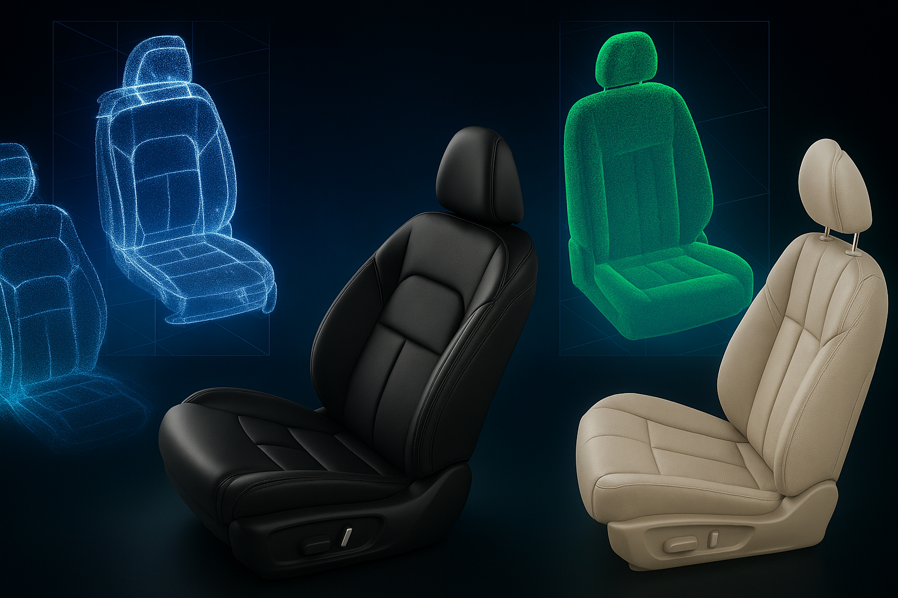

"领导驾驶舱"人机界面工效学分析
2023.10 – 2025.01
人因工程
界面设计
HCII2025
基于认知负荷理论，针对大屏界面的多图布局设计进行深入研究。通过Unity构建交互实验环境， 结合行为分析和NASA-TLX量表，验证了优化后的界面设计能够显著降低用户的认知负荷。
核心贡献
- • 设计并实施Unity交互实验，招募30+参与者
- • 参与完成高保真界面原型
- • 参与完成界面设计规范和界面使用说明文档
- • HCII 2025会议论文已接收
使用工具
Unity
C#
Figma
SPSS
MATLAB

界面应用平台研发
2024.02 – 至今
保密合作项目
300+界面
实验范式
参与合作项目，负责界面应用平台的整体交互设计。从竞品调研到功能架构， 再到300+界面的详细设计，平台已接近交付并支持后续的脑机实验与认知工效评估。
项目职责
- • 参与竞品调研与功能架构设计
- • 主导设计300+界面交互原型
- • 建立设计规范与组件库
设计工具
Figma
Xmind

驾驶座椅静态舒适性评价体系研究
2022.05 – 2022.09
校企合作项目
逆向建模
点云采集
参与校企合作项目，负责多车型座椅点云采集与CATIA逆向建模工作。 研究成果纳入企业数字模型库，为后续产品迭代提供数据支撑。
核心工作
- • 多车型座椅点云采集
- • CATIA逆向建模与优化
- • 成果纳入企业数字模型库
- • 支撑后续产品迭代设计
技术工具
CATIA
点云处理
逆向工程
数据分析

2024.11 – 至今
面向人类反馈强化学习的界面设计
硕士课题
共享心智模型
RLHF
当前正在进行的硕士课题研究，基于共享心智模型(SMM)理论构建对话式RLHF界面。 通过融合行为数据与眼动数据，验证反馈透明度对认知负荷的影响机制。 搭建垂直数据集，训练垂直小模型。
研究创新
- • 构建SMM驱动的RLHF交互认知框架
- • 设计对话式UI并进行实验验证
- • 设计-数据-算法的闭环微调
研究方法
Python
RLHF
眼动追踪
行为分析